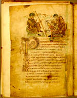

Publius Terentius Afer, Comoediae. Latijn. Handschrift op perkament, 154 ff., 255 x 180 mm. Frankrijk (Fleury?), eerste helft van de elfde eeuw. -- (VLQ 38)
Bijna overal waar in de middeleeuwen Latijn geleerd werd, zijn de komedies van Terentius (circa 195/190-159 v.Chr.) gelezen. Vandaag de dag wordt de tekst nauwelijks onderzocht vanwege het ontmoedigend hoge aantal bewaarde handschriften, maar concentreert men zich liever op de weinige vroege handschriften die geïllustreerd zijn. Want daarin kan voortreffelijk worden waargenomen hoe de middeleeuwer laat-antiek erfgoed overnam, adapteerde en vervormde. Het Leidse handschrift vormt een van de interessantste schakels in dit proces, omdat de illustrator zich nogal eigenzinnig tegenover de traditie opstelde. Desondanks bleven er heel wat antieke elementen in gehandhaafd.
Dat blijkt al uit de hier getoonde illustratie op folio 1v. De auteur is dicterend voorgesteld. Zijn schrijver noteert de woorden op een rol. De illustratie op de pagina er tegenover laat een scène zien uit het eerste toneelstuk, de Andria, waar de zittende Simo aan Sosia het plan van het voorgewende huwelijk uiteenzet. Terwijl bij de eerste illustratie uiteraard geen verklarende namen nodig waren, zijn ze aan de tweede wel toegevoegd om de tekst gemakkelijker te visualiseren.
Literatuur
- A.W. Byvanck, Les principaux manuscrits à peintures conservés dans les collections publiques du Royaume des Pays-Bas, Paris 1931 ( = Bulletin de la Société francaise de reproduction des manuscrits à peintures. 15), p. 73-77, pl. XXI.
- L.W. Jones and C.R. Morey, The illuminated manuscripts of Terence prior to the thirteenth century. Princeton 1931.
- K.A. de Meyïer, Codices Vossiani Latini. Leiden 1973-1984 ( = Bibliotheca Universitatis Leidensis. Codices manuscripti. XIII-XVI), t. 2, p. 101-103.
- J. Vezin, Les 'scriptoria' d’Angers au XIe siècle. Paris 1974 ( = Bibliothèque de l’École des Hautes Études. IVe section: sciences historiques et philologiques. Facs. 322), p. 31, 43-44, 67, n. 23.
- M.D. Reeves in: Texts and transmission. A survey of the Latin classics. Ed. by L.D. Reynolds. Oxford 1983, p. 412-420.
| vorige pagina | top pagina |